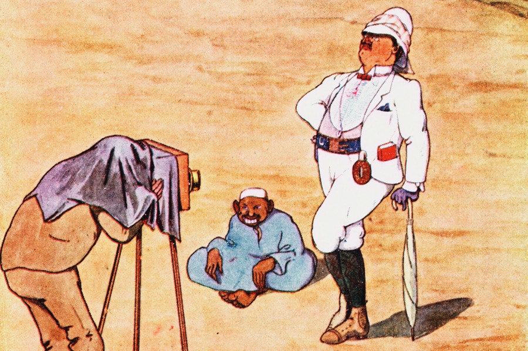

Startseite
Dokumente
Informationen zu Rassismus
Informationen zu Sexismus
Informationen zu Queerfeindlichkeit
Aktuelle Informationen
Informationen und Impressum
Über diese Seite
Über die Autorin
Tipps und Tricks gegen Hass im Netz
Wie erkenne ich Hass im Netz?
Was kann ich gegen Hass im Netz tun?
Wo finde ich Hilfe bei Hass gegen mich?
HASS IM NETZ
Eine Masterarbeit von A. Brügger
Betreut von D. Goldsmith und Prof. Dr. F. Metzger der
Pädagogischen Hochschule Luzern
Themen zu Hass im Netz - Kurzübersicht
Bootstrap Example
Rassismus
Historischer Hintergrund
Text
Ursachen und Folgen
Text
Eine persönliche Geschichte
Text
Sexismus
Historischer Hintergrund
Text
Ursachen und Folgen
Text
Eine persönliche Geschichte
Text
Queerfeindlichkeit
Historischer Hintergrund
Text
Ursachen und Folgen
Text
Eine persönliche Geschichte
Text